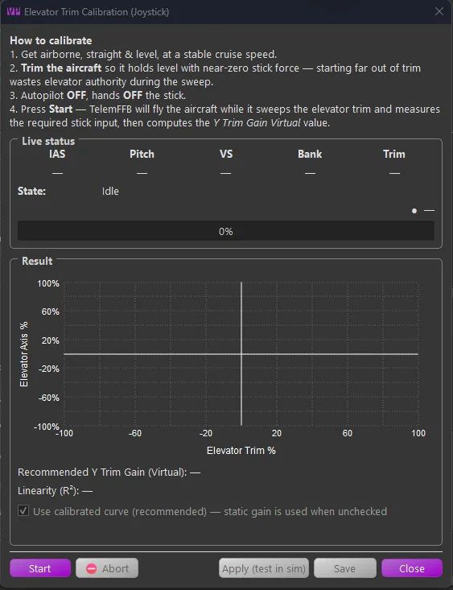
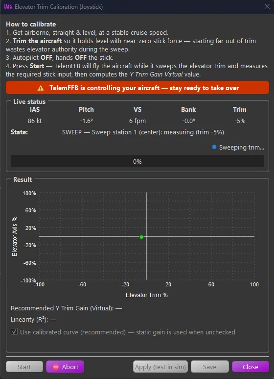
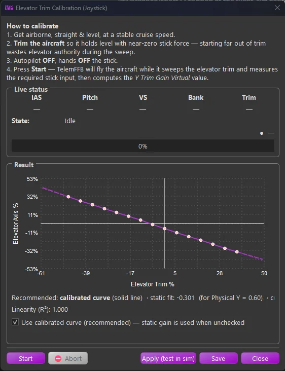

1. Automatic Trim Calibration¶
Manual tuning of the elevator trim gain is slow and error prone. The Elevator Trim Calibration tool automates it: TelemFFB flies the aircraft briefly, sweeps the elevator trim through its range while holding the aircraft level, measures the stick input for each trim setting, and computes the correct Y Trim Gain Virtual value — or a full response curve for aircraft that need one.
Warning
While a calibration is running, TelemFFB is actively flying your aircraft: it manipulates the trim and the elevator/aileron axes to hold the aircraft level. Keep your hands off the controls, keep the autopilot off, and be ready to take over and press Abort at any time. Only run it with safe altitude and airspace.
Note
Calibration applies to the elevator (Y) axis of a joystick only, and is run from the master TelemFFB instance.
1.1 Before You Start¶
- Be airborne, straight and level, at a stable cruise speed.
- Trim the aircraft so it holds level with near-zero stick force. Starting far out of trim wastes elevator authority during the sweep.
- Autopilot OFF, hands off the stick.
- Axis Control and Trim Following must be enabled (see Trim & Autopilot Following).
1.2 Opening the Tool¶
Open the calibration tool from the Trim Curve Calibration → Calibrate… button in the Trim Following settings, or from the Utilities menu (Elevator Trim Calibration…).

The window shows:
- Instructions and a live status panel: airspeed, pitch, vertical speed, bank, current trim, and the engine’s current state. A status light turns green when the aircraft meets the preconditions and the run is ready to begin.
- A result graph, plotting the elevator axis required to hold level (vertical) against elevator trim (horizontal). It fills in as the sweep progresses.
- Start / Abort and, once a result is available, Apply / Save.
1.3 Running a Calibration¶
With the aircraft trimmed, level and stable, with the readiness light green, press Start. TelemFFB takes over: it makes a few small control inputs to learn the aircraft’s response, settles it into level flight, finds the natural trim point, then sweeps the trim while recording the stick input needed at each step. A red banner reminds you it is in control, and the status line reports the current phase.

The whole process usually takes one to a few minutes depending on the aircraft. If the aircraft diverges, the airspeed drifts too far, the autopilot is re-engaged, or you take the controls, the run aborts safely and hands control back.
1.4 Reading the Result¶
When the sweep finishes, the graph shows the measured data points and the fit. The tool computes both a single static gain and a full curve, and tells you which it recommends.

- Recommended: calibrated curve - for most aircraft the curve is recommended, because it holds the nose level across the entire trim range even when the response is not a straight line.
- Static fit — the single Y Trim Gain Virtual value that best fits the data. TelemFFB displays it alongside the curve for reference and comparison with your current profile value.
- Linearity (R²) - how straight the measured response is. A value close to 1.00 means the aircraft responds almost linearly and the static value alone will work well; a lower value means the response is curved and the calibrated curve is worth using.
- Use calibrated curve (recommended) - the checkbox that decides which is applied and saved. It defaults to the recommendation.
The tool may also note things worth knowing, for example that the trim response is asymmetric (stronger on one side of neutral than the other), or that the airspeed drifted during the sweep and the run should be repeated with steadier power.
1.5 Applying and Saving¶
- Apply (test in sim) loads the result live without saving it, so you can fly-test it immediately. To test: fly straight and level, hold the stick still, and slowly run the trim nose-up then nose-down through its range. With a good value the nose stays level as you trim: the stick relieves under force feedback but the aircraft does not pitch. If the nose drifts, re-run the calibration or toggle the curve on/off to compare.
- Save writes the result to the current aircraft’s profile: the static Y Trim Gain Virtual value, the calibrated curve, and the Use Calibrated Trim Curve setting all together, so you can switch between the curve and the static value at any time from the settings.
A saved curve is shown (read-only, with its capture date and airspeed) whenever you re-open the calibration tool for that aircraft.
X-Plane
Automatic calibration works in X-Plane as well as MSFS. The tool commands the elevator trim through the TelemFFB X-Plane plugin; a current version of the plugin is required so that the pitch, vertical-speed and trim telemetry it relies on are available.